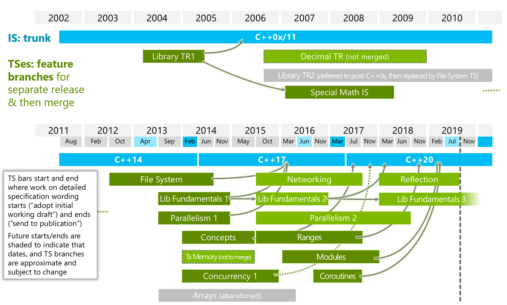

The New ISO Standard C++20
Bernd Doser
HITS gGmbH
July 2022
This presentation is available at
Agenda
- Warm-up with C++
- Important C++11 features
- C++20 features
- Concepts, ranges
- Modules, coroutines
- std::format, three-way comparison
- Coding competition
My Background
- PhD in theoretical chemistry
- Linear scaling electron-electron correlation
- C++ scientific software developer since 2004
- Automatic differentiation for tailor-made force fields (AMS GmbH Freiburg)
- Open source projects @ HITS: GROMACS-FDA, GROMACS-RAMD, PINK, HiFlow3, TACO
- Personal open source projects: BlasBooster, GeneHunter
Why C++?
- High performance
- Multi-paradigm
- Imperative
- Object-oriented
- Generic
- Functional
- Strong type system
- Strict backward compatibility
ISO Standardization
- C++98: First ISO Standard
- C++11: Smart pointers, move sematic, Lambda functions, range-based for loop, auto
- C++14: Variable templates, generic lambdas
- C++17: Structured bindings
- C++20: Modules, concepts, coroutines, ranges
- Suggestions for C++23: “A plan for ranges”, reflections
ISO Timeline
Books and ISO Standard
- C++20 ISO Standard: ISO/IEC 14882:2020
- Commercial version ~200 EUR
- Free working draft
Helpful Links and Tools

C++98 Warm-up
Carbage Collection vs. RAII
Carbage Collection (Java, Python, Go)
- Automatic memory management, which periodically stops all threads and frees unreferenced memory.
- Extra overhead
RAII: Resource Aquisition is Initialization (C++, Rust)
- The lifetime of a resource will be bound to the lifetime of a local variable. C++ automatically manages the lifetime of locals.
- Smart pointers (C++11) overcome the manually memory deallocation.
C++ principle: “Don’t pay for something you don’t use.”
Raw pointers (before C++11)
- Manual allocation and deallocation of memory
- Segmentation faults
- Memory leaks
void func()
{
int* valuePtr = new int(42);
if ( /* ... */ ) return; // memory leak
delete valuePtr;
}Note
Raw pointers (new) are deprecated in C++20 and will be removed in C++23.
Smart pointers (C++11)
#include <memory>
void func()
{
std::shared_ptr<int> ptr (new int(42));
if ( /* ... */ )
return; // no memory leak
}Better:
Best:
Smart pointers (C++11)
std::unique_ptr<T>
- Allows exactly one owner of the underlying pointer
- Can be moved to a new owner, but not copied or shared
std::shared_ptr<T>
- Reference-counted smart pointer
- The raw pointer is not deleted until all owners have gone out of scope
std::weak_ptr<T>
- Required to break circular references between
shared_ptr
Smart pointers (C++11)
auto p1 = std::make_shared<int>(1);
auto p2 = p1;
assert(*p2 == 1);
assert(p1.use_count() == 2);
auto p3 = std::make_unique<int>(2);
// auto p4 = p3; // unique_ptr can't be copied
auto p5 = std::move(p3);
assert(*p5 == 2);
assert(p3 == nullptr);
// auto p6 = std::weak_ptr<int>(3); // weak_ptr can't own
auto p6 = std::weak_ptr<int>(p1);
assert(p6.use_count() == 2);
p1.reset();
p2.reset();
assert(p6.expired());Move Semantics (C++11)
L-values will be copied
- Permanent objects with a name and a storage address
- Copy is expensive
R-values will be moved
- Temporary objects without a name and a storage address
- R-values can only appear on the right side in an assignment
- Move is fast
Containers
| Name | Description |
|---|---|
array |
static contiguous array |
vector |
dynamic contiguous array |
list |
linked list |
set |
sorted collection of unique keys |
map |
sorted collection of key-value pairs |
unordered_set |
hashed collection of unique keys |
unordered_map |
hashed collection of key-value pairs |
C++20: New Keywords
- Concepts
conceptrequires
- Coroutines
co_awaitco_returnco_yield
- Modules
importmodule
- Others
constinitconstevalchar8_t
Modules
- Modules are a new way to organize C++ code into logical components
- Problems of the obsolete header files
- Repetitive compilation of the same code
- Inclusion order-dependent headers
- Cyclic dependencies
- Macros leakage in and out from headers
- Poor encapsulation of implementation details
Modules
// math.cppm
export module math;
export int add(int fir, int sec)
{
return fir + sec;
}
// client.cpp
import math;
int main()
{
add(2000, 20);
}- Modules are orthogonal to namespaces.
Coroutines: Evolution of Functions
int f1() { return 1; } // A C-like function
int f2(int arg) { return arg; } // Function overloading
double f2(double arg) { return arg; }
template <typename T> // Function template
T f3(T arg) { return arg; }
struct F4 { // Functor
int operator()() { return 4; }
};
auto f5 = [] (int i) { return i * i; }; // Lambda (C++11)
auto f6 = [] (auto arg) { // Generic lambda (C++14)
return std::to_string(arg);
}; Coroutines
- A coroutine is a generalisation of a function that allows the function to be suspended and then later resumed.
- A coroutine is stackless: their state is stored in heap, not on stack
- A coroutine contains one of these keywords:
co_return(coroutine return statement)co_await(await expression)co_yield(yield expression)
Coroutines: CppCoro
- Coroutines provides a very low-level interface.
- CppCoro provides asynchronous programming abstractions (maybe in C++23)
Task<T>: asynchronous computation that is executed lazilyGenerator<T>: a coroutine type that produces a sequence of values of typeTwhere values are produced lazily and synchronously.
Coroutines: Generator
Concepts
- With concepts, failure happens early and the error message is much more meaningful.
- Before C++20
enable_ifwas used to check template arguments (Example).
Concepts: Example
- Definition
- Usage
The World Before Ranges (C++11)
#include <algorithm>
int main()
{
std::vector<int> data{42, 1, 12, -3, 14, -5};
std::vector<int> pos;
// copy only positive numbers:
std::copy_if(data.begin(), data.end(),
std::back_inserter(pos), [](int i){ return i >= 0; });
}Ranges: What We Want
- Direct usage of containers without iterators (pointers)
- Chaining similar to unix pipes
- Lazy evaluation
Ranges: filter
Ranges: How it works
- A
rangeis a concept, not a container - Defined in header
<ranges>:
Note
Why std::begin(t) instead of t.begin()?
Ranges: views
Eric Niebler
“Views are composable adaptations of ranges where the adaptation happens lazily as the view is iterated.”
template<class D>
requires std::is_class_v<D> && std::same_as<D, std::remove_cv_t<D>>
class view_interface;view_interface is typically used with CRTP
Ranges: Pipelining
- Views can be chained by overloading the
operator|(see CompilerExplorer).
auto const data = {0, 1, 2, 3, 4, 5};
auto even = [](const auto& v) { return 0 ## v % 2; };
auto square = [](const auto& v) { return v * v; };
// "pipe" syntax of composing the views:
auto result { data
| std::views::filter(even)
| std::views::transform(square)
| std::views::drop(2)
| std::views::reverse
| std::views::transform([](const auto& v){ return std::to_string(v); }) };Ranges: Lazy Evaluation
auto odd = [](int i){ return i % 2 == 1; };
auto isPrime = [](int i) {
for (int j=2; j*j <= i; ++j){
if (i % j == 0) return false;
}
return true;
};
for (int i: std::views::iota(1) | std::views::filter(odd)
| std::views::filter(isPrime)
| std::views::take(10))
{
std::cout << i << std::endl;
}- Expression templates
- CompilerExplorer isPrime
- CompilerExplorer transform
C++20: Text Formating
std::format- Safe and extensible
- Faster then printf and iostreams
- Separation of format string and arguments
std::format("The answer is {}.", 42);
std::format("strftime-like format: {:%H:%M:%S}\n", 3h + 15min + 30s);- Available at {fmt} until compiler support
Comparison before C++20
- 6 comparison operators
==,<contain the real logic!=,>,<=,>=will be derived
- Free functions to allow comparison of convertible types
- 18 comparison operators for non-convertible types
op(const& T1, const& T2)op(const& T2, const& T1)
Comparison before C++20
struct Point
{
int x,y;
friend bool operator == (const Point& a, const Point& b) {
return a.x == b.x and a.y == b.y; }
friend bool operator < (const Point& a, const Point& b) {
return a.x < b.x or (a.x == b.x and a.y < b.y); }
friend bool operator != (const Point& a, const Point& b) {
return !(a==b); }
friend bool operator <= (const Point& a, const Point& b) {
return !(b<a); }
friend bool operator > (const Point& a, const Point& b) {
return b<a; }
friend bool operator >= (const Point& a, const Point& b) {
return !(a<b); }
};C++20: Three-way Comparison
- Spaceship operator
<=>(similar tostrcmp)- (a <=> b) < 0 if a < b
- (a <=> b) > 0 if a > b
- (a <=> b) == 0 if a == b
- Compiler generates all 6 comparison operators to compare X with Y memberwise
- Custom implementation needs also
operator ==
Comparison Categories
strong_ordering- exactly one of
<, >, ==must be true and ifa == bthenf(a) == f(b)
- exactly one of
weak_ordering(equivalent but not equal)- exactly one of
<, >, ==must be true and ifa == bthenf(a) != f(b) - Example:
CaseInsensitiveStringstoring original string, but compare in case-insensitive way.
- exactly one of
partial_ordering- one of
<, >, ==might be true and ifa==bthenf(a) != f(b) - Example: float/double because
NaNis not comparable
- one of
Coding Competition
2016 Quali Round Problem B: Revenge of the Pancakes
Stack of pancakes with a happy face made of chocolate on one side ‘+’ and nothing on the other side ‘-’. Goal is to have all pancakes with the happy side on the top.
Coding Competition Solution
std::string stack{"++--+-"};
auto flip = [](const char c){
return c == '+' ? '-' : '+'; // Conditional/Ternary operator
};
int n = 0;
for (auto first = std::ranges::find(stack, '-'); first != std::end(stack);
first = std::ranges::find(stack, '-'), n++)
{
if (stack[0] == '+') {
auto sub = std::ranges::subrange(std::begin(stack), first);
std::ranges::transform(sub, std::begin(sub), flip);
} else {
auto first_happy = std::ranges::find(stack, '+');
auto sub = std::ranges::subrange(std::begin(stack), first_happy);
std::ranges::transform(sub, std::begin(sub), flip);
}
}
std::cout << "You need " << n << " flips to make all happy." << std::endl;Summary
- C++20 is like C++11 a major change in the language
- The Big Four of C++20
Rangesis a great step towards functional programmingModulessimplifies multiple translation unitsConceptsallows template arguments specificationsCoroutinesare stackless and can be suspended
Reflectionsand more ranges are expected for C++23
Thank you
Bjarne Stroustrup
“Within C++, there is a much smaller and cleaner language struggling to get out”

C++20 (B. Doser)